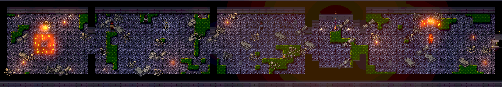
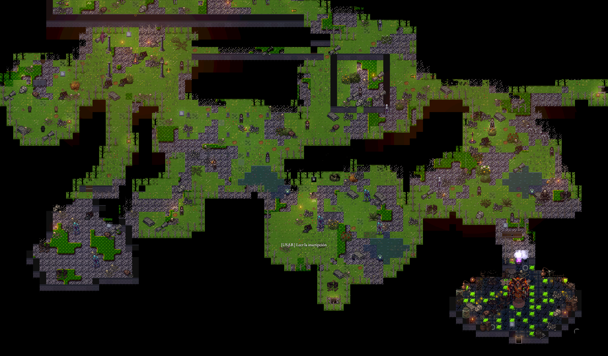
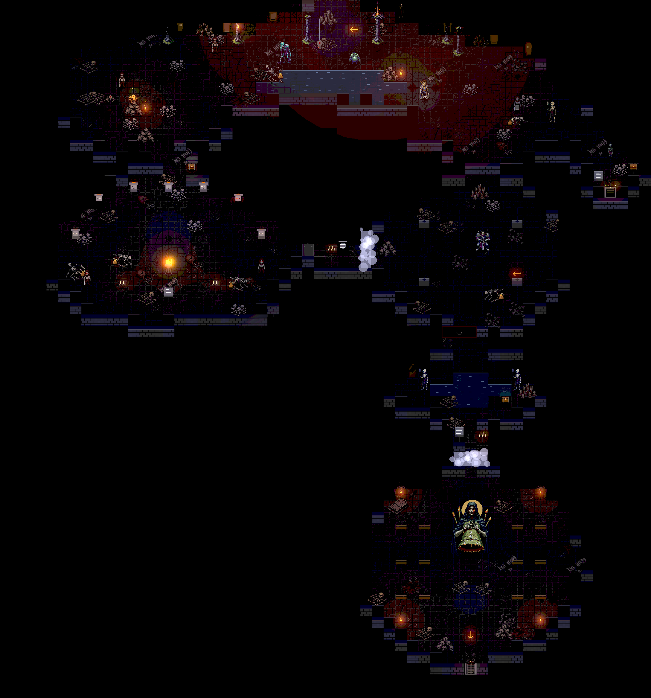
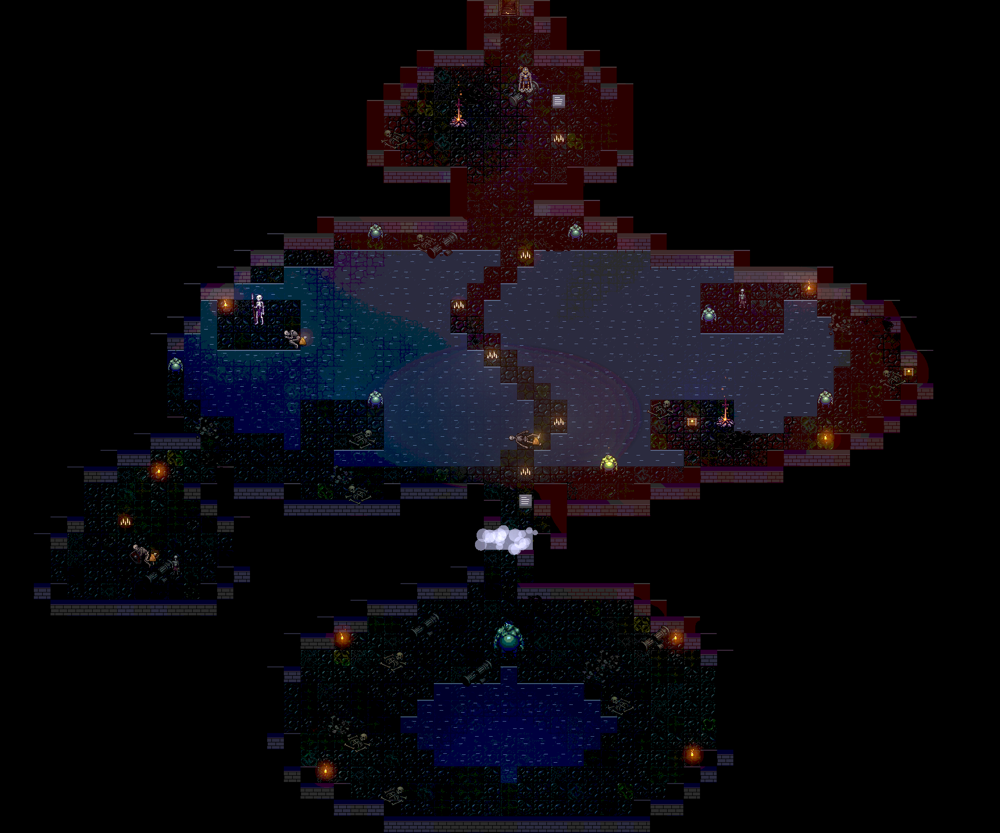
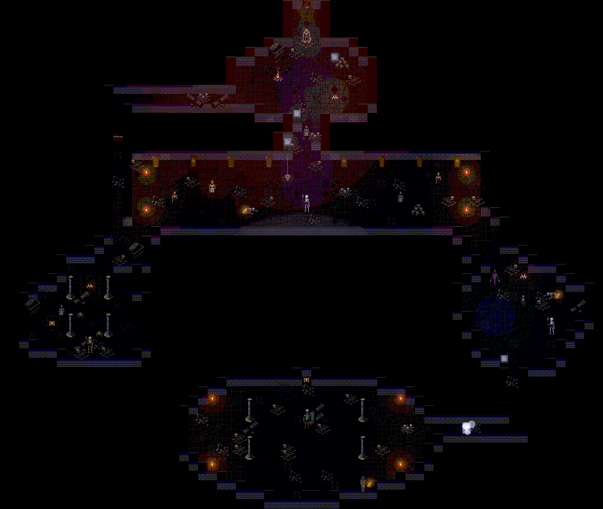
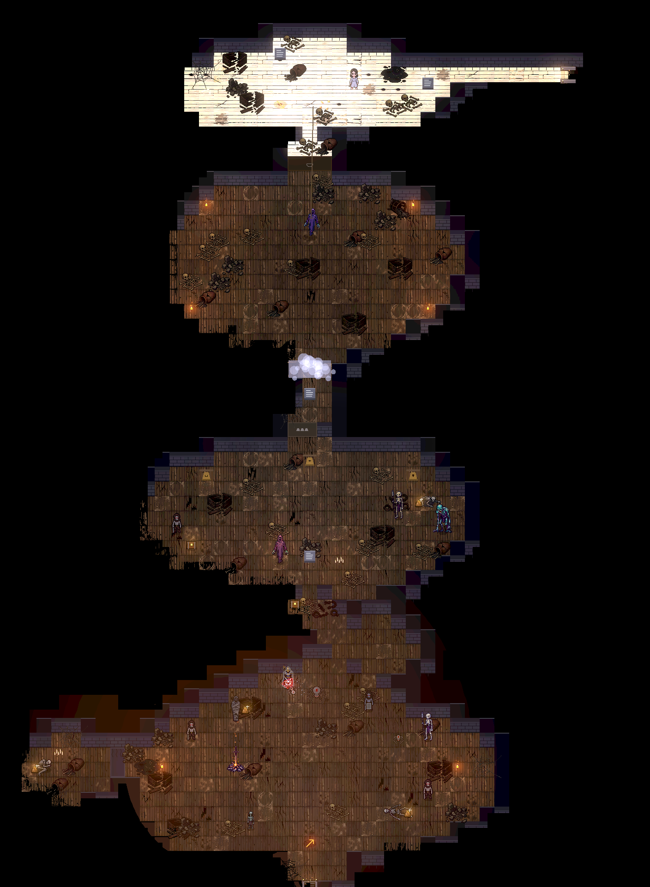
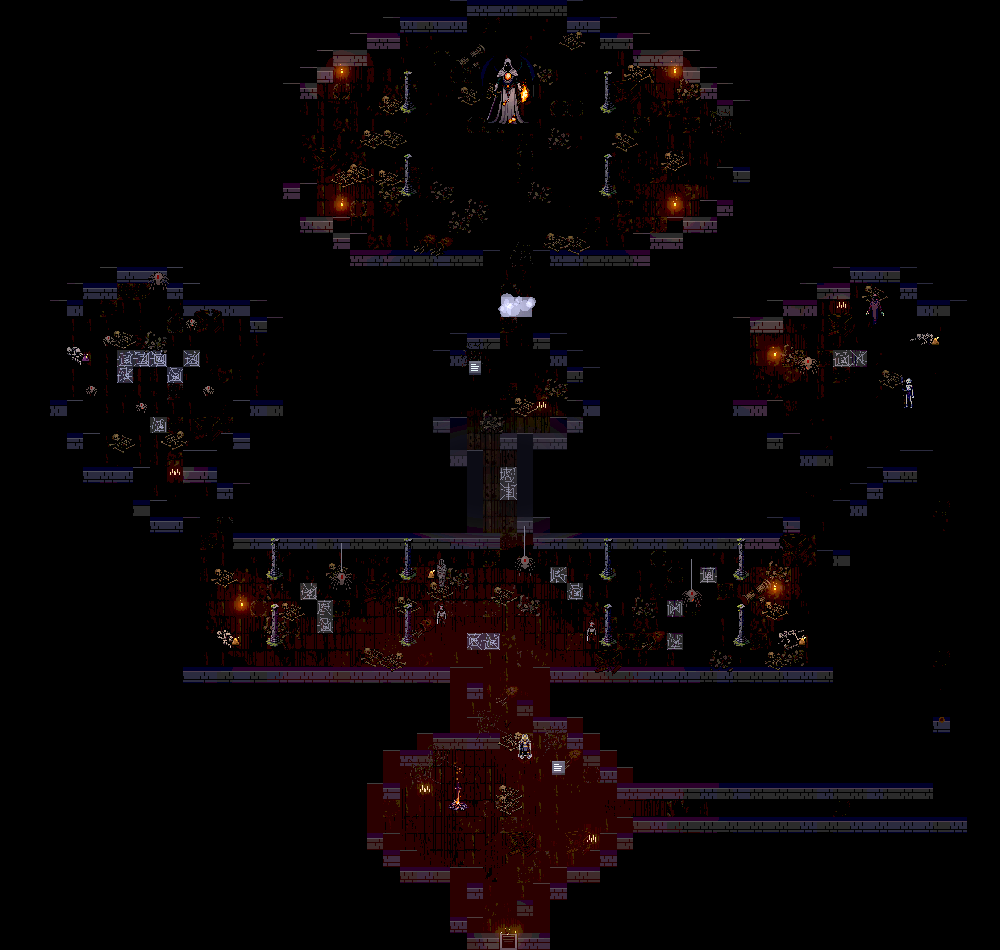
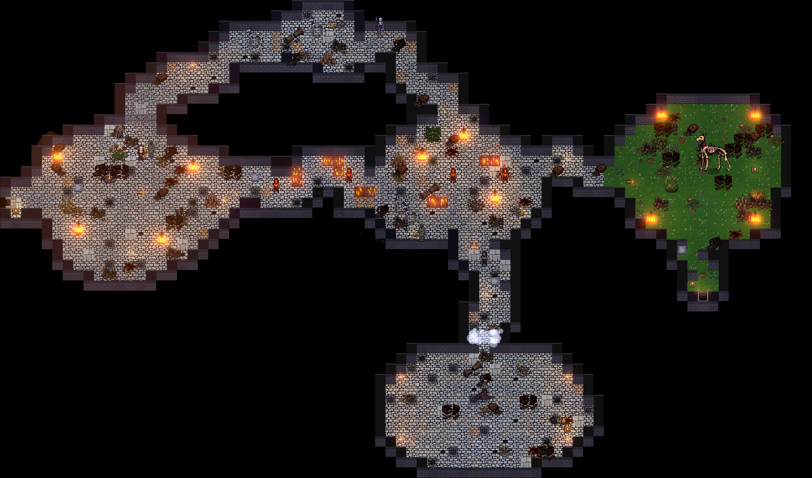
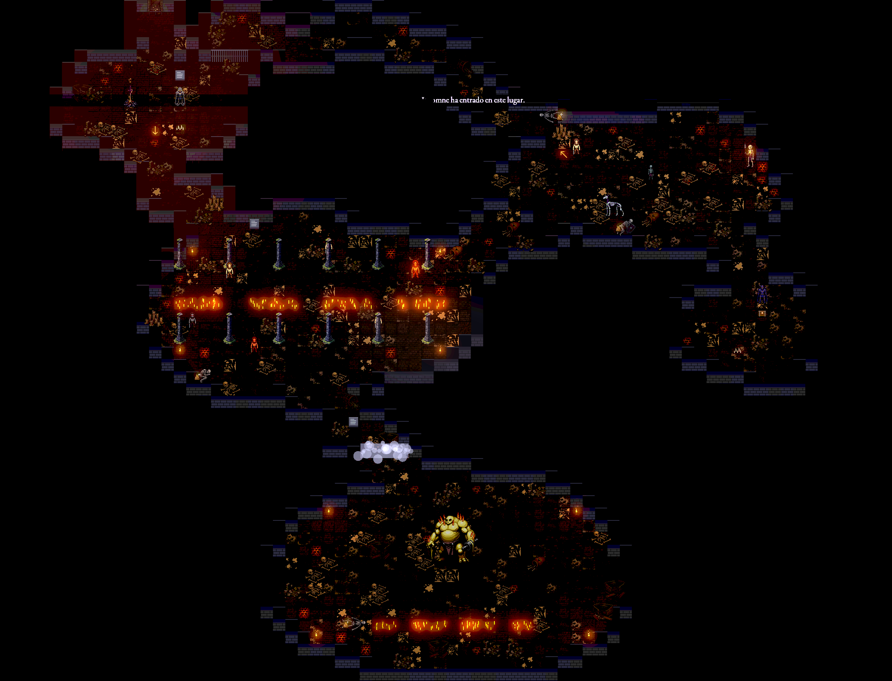
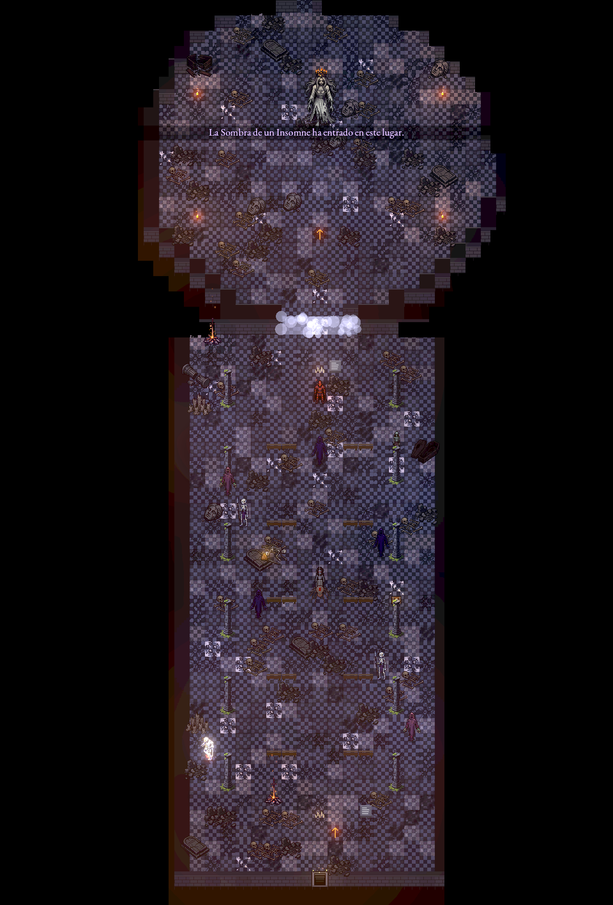

Libro IV · Guía del Insomne
«La Ceniza ajena te recompone. Lo tuyo quedó donde caíste.» — La Pira del Velador
Este capítulo está escrito para dos lectores. Si es tu primera noche en Hondavela, léelo de principio a fin. Si ya has cerrado el Lecho alguna vez, busca los recuadros Para veteranos.
1. Los controles
En la pantalla (teléfono y tablet)
| Botón | Qué hace |
|---|---|
| Joystick (izquierda) | Moverse. También apunta: tu golpe busca al enemigo más cercano hacia donde inclinas. |
| ATQ | Golpe ligero. Púlsalo seguido para encadenar el combo. |
| FUERTE | Golpe fuerte: más lento y más caro, rompe escudos y postura. |
| RODAR | Tócalo para rodar; mantenlo para correr. |
| ESCUDO | Mantén para cubrirte. Sin escudo pone GUARDIA: te cubres con el arma a dos manos. |
| PARRY | Desvío: el instante justo antes del golpe enemigo. |
| VASIJA | Beber de la Vasija de Ceniza (curarse). |
| USAR | Puertas, palancas, cadáveres, hogueras y puzles. Junto a un NPC pone HABLAR; agarrando un ataúd, SOLTAR. |
| OBJETO | Usa el consumible elegido en el menú (cuchillo, bomba, incienso…). Una retícula ámbar marca a quién iría. |
| MENÚ | Pausa, personaje, equipo, mapa, diario y ajustes. |
Puedes deslizar el pulgar de un botón a otro sin levantarlo. Los nombres de los botones aparecen al empezar y al pulsarlos, y luego se desvanecen: los iconos bastan. En Ajustes puedes agrandarlos y hacerlos más transparentes.
Con mando
| Mando | Acción |
|---|---|
| Stick izquierdo | Moverse |
| R1 / R2 | Ligero / Fuerte |
| L1 / L2 | Escudo / Parry |
| B (círculo) | Rodar (mantener: correr) |
| X (cuadrado) | Vasija |
| A (cruz) | Usar / Hablar |
| Y (triángulo) | Objeto |
| Start / Back | Menú / Hablar |
Con teclado y ratón
| Tecla | Acción |
|---|---|
| W A S D o flechas | Moverse |
| J / U | Ligero / Fuerte |
| Espacio o K | Rodar (mantener: correr) |
| I / O | Escudo / Parry |
| R | Vasija |
| E o Intro | Usar |
| Q o F | Objeto |
| T | Hablar |
| Esc o Tab | Menú |
| Clic izquierdo (con Mayús: fuerte) | Atacar hacia el puntero |
| Clic derecho (con Mayús: parry) | Cubrirse |
Todas las teclas se cambian en Ajustes → Teclas.
2. El combate
El aguante lo es todo
La barra verde es el aguante. Cada golpe, cada rodada, cada bloqueo y cada paso corriendo lo gastan. Se recupera solo, pero tarda un poco en empezar después de cada acción.
- Con poco aguante todavía puedes empezar una acción más, y quedas en negativo. Mientras estés en deuda no puedes rodar, atacar ni desviar: toca esperar a que la barra vuelva.
- Sin aguante, un golpe bloqueado te rompe la guardia y te deja abierto.
- La regla de oro: no gastes la última rodada en atacar.
Rodar
Rodar te hace intocable durante casi toda la voltereta. No se trata de huir sino de atravesar el golpe: rueda hacia el enemigo o hacia un lado, casi nunca hacia atrás.
El peso de tu equipo decide cómo ruedas:
| Carga | Rodada |
|---|---|
| Hasta el 25 % | Ligera: más rápida, más intocable y más barata |
| Hasta el 50 % | Media |
| Hasta el 100 % | Pesada: lenta, corta y cara |
| Por encima | Sobrecarga: no puedes rodar |
La Resistencia aumenta la carga que soportas.
Pulsar el golpe justo después de rodar suelta un ataque especial de tu arma. Lo mismo pasa corriendo.
Bloquear
Con el escudo en alto, los golpes normales te quitan sobre todo aguante en lugar de vida. Cuánto paras depende del escudo. Moverte cubierto es lento. Los golpes imparables (destello violeta) atraviesan cualquier escudo.
Sin escudo te cubres con el arma a dos manos (GUARDIA): paras menos y te cansas más. Las dagas, además, desvían.
Parry y contraataque
El parry desvía el golpe si llega en el instante justo, un poco antes del impacto. Si aciertas, el enemigo se tambalea con una estrella sobre la cabeza: pulsa ATQ para el contraataque, un golpe crítico que hace muchísimo daño.
- Solo se pueden desviar los golpes que avisan en rojo.
- Los virotes de los Ballesteros y las brasas de las Rezadoras también se desvían. La brasa, desviada, vuelve a quien la lanzó.
- Fallar un parry te deja con la guardia baja. Practícalo con el Centinela del Turno, en el Tutorial.
La puñalada por la espalda
Un enemigo desprevenido y de espaldas (que no te ha visto, o que duerme de cara al muro) se puede apuñalar: acércate por detrás y ataca. Es un crítico igual que el contraataque. Logro Por la espalda a los 15.
Hiperarmadura
Los golpes fuertes de las armas pesadas (mandobles, hachas y garrotes) no se interrumpen aunque te golpeen a mitad del gesto. Puedes cambiar un golpe recibido por uno dado. Úsalo con cabeza.
Leer al enemigo
| Aviso | Significa |
|---|---|
| Ojos que se encienden + cuña en el suelo | Golpe en camino, hacia donde apunta la cuña |
| Doble parpadeo ámbar | Golpe retrasado: espera antes de rodar |
| Destello violeta | Imparable: solo rodar |
| Anillo dorado | Onda: sal o rueda a través del frente |
| Sombra en el suelo | Algo va a caer ahí (un salto, una campana) |
| Círculo de aviso | Un giro: el alcance es el círculo |
| Rugido | Ha entrado en furia: más rápido a partir de ahora |
Para veteranos. Los enemigos recuerdan tus costumbres y se las enseñan unos a otros. Si siempre ruedas al mismo tiempo, retrasarán el golpe; si siempre te cubres, encadenarán; si bebes cerca de ellos, castigarán el trago; si te quedas plantado después de atacar, te castigarán la recuperación. Descansar les hace olvidar una parte. Lo que no olvidan es tu partida: la memoria es de cada ranura.
3. Las hogueras
Encender no es descansar. La primera vez que pulsas USAR en una hoguera, la enciendes: desde ese momento es tu punto de regreso al morir y un destino para Viajar. Encenderla no te cura ni levanta a los muertos.
Después, cada USAR es descansar:
- Recuperas toda la vida y todas las cargas de la Vasija.
- Todos los enemigos comunes se levantan otra vez. Los jefes y los únicos, no.
- Se abre el menú de la hoguera: subir de nivel, reforzar la Vasija, avivar, viajar y recuperar recuerdos del Diario.
Una hoguera sin encender se ve como un rescoldo: un puñado de brasas sin llama.
4. Morir
Al morir despiertas en la última hoguera encendida y toda tu Ceniza se queda en el suelo, donde caíste, como una mancha que brilla.
- Vuelve a por ella y tócala para recuperarla entera.
- Si mueres antes de llegar, se pierde para siempre. La nueva mancha sustituye a la vieja.
- Una carta de muerte te dice quién te mató y te da un consejo.
- Cada tres muertes seguidas sin descansar, uno de tus recuerdos del Diario de Velador se emborrona. En la hoguera puedes recuperarlo con Ceniza (sección 9).
Consejo. Antes de cruzar una niebla de jefe con mucha Ceniza encima, vuelve a la hoguera y gástala. La Ceniza que se pierde es la que no se ha gastado.
5. Subir de nivel
La Ceniza es moneda y experiencia a la vez. En cualquier hoguera, desde la primera, puedes subir de nivel. El HUD te avisa con ▲ Nivel cuando te alcanza para uno.
| Atributo | Qué mejora |
|---|---|
| Vigor | Vida |
| Resistencia | Aguante y carga de equipo |
| Fuerza | Daño de hachas, mandobles y garrotes |
| Destreza | Daño de dagas, lanzas y espadas (y del Báculo de Vela) |
En el menú, reserva los puntos con + y − y pulsa Confirmar. Nada se gasta hasta entonces. Cada nivel cuesta algo más que el anterior.
- Cada arma pide un mínimo de Fuerza o Destreza. Sin él, pega la mitad.
- Pasados los niveles 20 y 30 de un atributo, cada punto rinde menos. Repartir compensa.
Para veteranos. El Camposanto da menos Ceniza a propósito (un 60 %), para que no salgas de él demasiado fuerte. Si te atascas en un jefe, ve primero a otra zona.
6. La Vasija de Ceniza
Tu curación. Empiezas con 3 cargas, que se llenan al descansar. Beber tarda un segundo largo y te deja quieto: nunca bebas al alcance de un golpe. Los jefes lo saben: si empiezas un trago cerca de ellos, no esperan y te lanzan en el acto su golpe más rápido; aléjate antes de beber.
Se mejora en la hoguera de dos maneras:
- Más cargas (hasta 10) con Esquirlas de vasija: cada jefe deja una y la Buhonera vende dos. Usa Reforzar Vasija.
- Más curación por trago (hasta +5, un 5 % más cada nivel) con Huesos de velador: los sueltan los élites y la Buhonera vende tres. Usa Quemar hueso.
Además, la Lágrima de la Guardia Perpetua del Rey del Túmulo da una carga más.
Avivado y avivar
Son dos cosas distintas que se parecen.
- Estar Avivado: tras vencer a un jefe, o al quemar un Ascua viva en el pecho, tienes un 15 % más de vida máxima hasta que mueras. Se ve por las brasas que te rodean.
- Avivar una hoguera: en el menú de una hoguera, quemar un Ascua viva en ella te da una carga más cada vez que descanses allí. Se puede hacer dos veces en cada hoguera.
«El pecho da fuerza hasta la próxima muerte. La hoguera, una Vasija más honda para siempre.»
7. Atajos y caminos
Hondavela está hecha de vueltas. Casi todas las zonas tienen un atajo de un solo sentido que te devuelve a la hoguera:
- Escalas que se dejan caer de una patada desde arriba.
- Portones atrancados que solo se abren desde el otro lado.
- Verjas (en el Barrio, en el Horno) que se abren desde el lado del jefe.
- El ascensor-ataúd entre el Camposanto y el Osario.
Si ves una puerta cerrada que no se abre, recuérdala: casi siempre la abrirás desde el otro lado. El mapa de la zona (en el menú) solo dibuja lo que ya has visto.
Las inscripciones de las paredes dan pistas: sobre trampas, sobre jefes, y sobre las zonas ocultas (Cisterna, Criptas, Desván y Horno), que señalan con su sello.
Trampas
| Trampa | Cómo se ve | Qué hacer |
|---|---|---|
| Losa de Duelo | Losa limpia en un suelo sucio | Al pisarla, una sombra crece y cae una campana. Rueda fuera de la sombra. El ruido atrae a los muertos. |
| Fosa oculta | Tierra donde no crece el musgo | Caes a un piso inferior. «Odo nunca pisaba allí.» |
| Saetera | Ranura en el muro | Dispara virotes. Se bloquean y se desvían. |
| Ataúd de pie | Ataúd vertical cerrado | Algunos esconden un Centinela. Otros están vacíos. |
| Suelo en llamas | Brilla | Quema. Rodar no lo apaga: rodéalo. |
| Telaraña | Tela en el suelo | Te frena y no te deja rodar. |
| Agua y pasto alto | — | Te frenan. A algunos enemigos, no. |
8. Puzles
Todos los puzles de Hondavela siguen dos reglas: la regla está a la vista y fallar no borra lo que ya hiciste. Las pistas de abajo van de menos a más. Lee solo la que necesites.
Las Siete Velas (Osario)
Una puerta con siete ojos cerrados y una sala con siete braseros, cada uno con un rostro.
Pista 1. Cada brasero tiene un rostro distinto. Míralos de cerca: no todos duermen igual.
Pista 2. «Siete rostros, siete vigilias. Despierta primero al que más duerme; el último no tiene párpados.» Lleva fuego desde la llama de la sala.
Pista 3. Enciéndelos de más dormido a más despierto, de los ojos completamente cerrados a los que no pueden cerrarse. Cada acierto abre un ojo de la puerta. Si te equivocas, el brasero se niega y lo hecho no se pierde.
Las Tres Campanas (Campanario)
Una puerta con tres campanas grabadas: una calavera, un ojo y una cuna. En la sala hay tres campanas.
Pista 1. Mira el símbolo de cada campana de la sala. La puerta se ilumina con cada campana tañida en orden.
Pista 2. «Primero se dobla por los muertos, luego se llama a los que velan, y al final se canta la nana.»
Pista 3. Calavera, ojo, cuna. Si tañes una fuera de orden cae una campana, pero las bien tañidas siguen encendidas.
El Contrapeso de los Ataúdes (Camposanto, Terraza de los Ataúdes)
Un ascensor-ataúd que no baja, un plato de hierro con cuatro muescas y varios ataúdes con bandas de hierro.
Pista 1. Agarra un ataúd con USAR y empújalo o tira de él con el joystick. Caminar contra él también lo empuja. Basta con que toque el plato: se encaja solo.
Pista 2. «Cuatro muescas en el plato. Ni una menos: el ataúd no baja. Ni una más: la cadena saltó con cinco.» Las bandas de hierro marcan cuánto pesa cada ataúd, y las muescas se encienden con el peso que hay encima.
Pista 3. El plato tiene dos huecos: elige los dos ataúdes que suman exactamente cuatro. Si te equivocas, USAR en el plato los devuelve a su sitio, y descansar también.
Pista 4. Aunque el peso sea el justo, el ascensor necesita además que sueltes una traba de hierro abajo, en el Osario, tras el Rey del Túmulo. Su cerradura brilla a medias para avisarte.
El muro que vibra (Campanario)
Pista. «La pared zumbaba con cada campanada. Ahora calla: a la campana grande le falta el badajo.» Habla con Ilse.
La puerta de la retorta (Camposanto)
Pista. «El Alquimista cerró su laboratorio y dio la llave a la guardia del adarve.» Busca entre los muertos del adarve.
9. El Diario de Velador
Doce recuerdos del Insomne que se desbloquean con el progreso. Cada tres muertes sin descansar, el último recuerdo intacto se emborrona: se ve que hubo algo escrito, pero no qué. En la hoguera puedes recuperarlo pagando Ceniza.
Conservarlos importa. El final del juego dice cuántos te quedan… y con los doce intactos se abre una puerta que de otra forma no existe.
10. Nueva Partida+ (ciclos)
Tras el final empieza un nuevo ciclo. Conservas el personaje, el equipo y los objetos. Hondavela vuelve a empezar, pero no igual:
| Por cada ciclo | Cambio |
|---|---|
| Vida de los enemigos | +60 % |
| Daño de los enemigos | +35 % |
| Ceniza que dan | +50 % |
| Élites | +5 % de probabilidad |
Empezar uno da el logro Otra vez. Los finales que no viste te siguen esperando.
11. Asistencia y accesibilidad
Hondavela es difícil a propósito, pero no tiene por qué serlo para todos igual. En Ajustes hay dos secciones pensadas para eso. Todas las ayudas empiezan apagadas, se activan por separado y no tocan los logros.
Asistencia
| Ayuda | Efecto |
|---|---|
| Daño recibido | 100 %, 75 % o 50 % |
| Ventanas más anchas | Rodar y parry perdonan un 30 % más |
| Velocidad del juego | 100 %, 90 % u 80 % |
| Reserva para rodar | Rodar nunca se niega por falta de aguante (sigues quedando en deuda) |
| Conservar Ceniza | Al morir conservas la mitad; la otra mitad queda en la mancha |
Accesibilidad
- Temblor de pantalla: normal, la mitad o nada.
- Destellos: suavizados.
- Pausa al golpear (el congelado del impacto): se puede quitar.
- Texto grande.
- Opacidad de los controles y botones grandes.
- Subtítulos lentos y con fondo.
- Vibración, música y efectos por separado.
- Calidad gráfica (resplandor, sombras, partículas) y 30 o 60 FPS. En teléfonos con poca memoria el juego elige solo.
- Idioma del texto (siete) y voz del narrador, por separado.
12. Logros
Cada partida tiene sus propios logros (botón Logros en el menú de partidas), que se borran con ella. Ahí se ven también los tiempos de cada zona y de cada jefe.
| Logro | Cómo |
|---|---|
| Primera vigilia | Descansa en una hoguera |
| Retorta rota | Vence al Precipitado de la Retorta |
| El rey sin corona | Vence a Ser Aldric |
| La soga cortada | Vence al Campanero Ahorcado |
| Rastro perdido | Vence al Sabueso de las Piras |
| Tierra encima | Vence a Odo el Enterrado |
| Aguas quietas | Vence a la Madre de las Charcas |
| Molde roto | Vence al Cerero Mayor |
| Relevado | Vence al Capitán del Relevo |
| Antorcha soltada | Vence al Alado de Hollín |
| Sin lágrimas | Vence a la Plañidera Mayor |
| Ojos abiertos | Vence a Ysolde |
| Ninguna sombra | Vence a las dos Sombras del Insomne |
| Badajo devuelto | Lleva el badajo a Ilse |
| Que arda | Dale a la Hermana Lumbre su fuego |
| Una fosa propia | Ayuda a Odo a encontrar su fosa |
| Mano firme | 50 parrys |
| Por la espalda | 15 puñaladas por la espalda |
| Brillo apagado | 5 élites |
| Obra de Anselmo | Un arma a +5 |
| Otra vez | Empieza un nuevo ciclo |
| El relevo · El desvelo · La vela de Edda | Los tres finales |
13. Diez consejos para la primera noche
- Haz el Tutorial. Hasta descansar en la Capilla de la Ceniza no puedes morir.
- Enciende cada hoguera que veas, aunque no vayas a descansar.
- Camina por sitios nuevos. Correr gasta aguante y no deja ver las trampas.
- Un enemigo cada vez. Retrocede hasta un pasillo.
- Dos golpes y atrás. El tercero casi siempre es el que te mata.
- Lee las paredes. Las inscripciones no mienten.
- Gasta la Ceniza antes de un jefe.
- Ve a otra zona si un jefe te supera.
- Habla dos veces con todo el mundo.
- Mira hacia arriba en el Desván.
14. Atlas: los mapas de cada zona
Cada mapa es la zona entera, capturada sin la oscuridad de la vigilia y a la escala del juego (una baldosa son 32 píxeles). Desde dentro verás mucho menos: solo lo que alumbran las hogueras, las antorchas y tu propio paso. Los nombres de los lugares son los del Libro I; las regiones con nombre son las que el juego distingue por su luz y su ambiente.
La Pira del Velador (tutorial)

Cinco estancias en fila. La hoguera de la Capilla de la Ceniza no admite viajes; la salida al Camposanto está al este del Atrio del Atizador.
Camposanto del Relevo

Regiones con nombre: el Laboratorio (la antesala con la puerta de la retorta y la sala del Precipitado, al sureste) y el Pozo (la sala de las fosas bajo el portón, al suroeste, adonde cae quien pisa tierra sin musgo). Salidas: al Osario por las escaleras de la fosa común, al Campanario desde el adarve, al Barrio por el confín este, a las Criptas al fondo de la Hondonada.
Osario

La bajada a la Cisterna está en el lado este de la galería. La puerta de los siete ojos solo se abre con las Siete Velas; tras el Rey se enciende la hoguera del Túmulo.
Cisterna de los Ahogados

El agua frena a los vivos y no a los Ahogados: el camino seco se lee de lejos por las velas. La segunda hoguera está en la Isla del Garfio.
Criptas de la Guardia

Los Guardias del Relevo paran de frente: hay que buscarles la espalda. El Sello del Relevo espera en el altar de la Capilla del Juramento.
Campanario Hendido

Regiones con nombre: las Campanas (la arena del Campanero, bajo el tejado roto) y la Cúspide (a cielo abierto, con la hoguera de las Tres Campanas, Ilse y la subida al Desván). La torre sube y no lleva a otro sitio: al Lecho se va por el Osario.
Desván Tejido

Mira hacia arriba antes de pasar: las Tejedoras cuelgan del techo. La telaraña del suelo frena y no deja rodar.
Barrio de los Veladores

Regiones con nombre: la Perrera (el patio-jardín abandonado del Sabueso, al este) y la Fosa (hundida entre muros, al sur, donde cava Odo). Bajo la Perrera está la boca del Horno; la verja del callejón solo se abre desde el lado de la fosa.
Horno de Velas

Los canales se cruzan por donde asoma la piedra, nunca rodando por encima. La Vela de Edda espera en el crisol.
Dormitorio Mayor

Es la catedral del prólogo. Una nave larga, pilares, bancos y la luz fría de los vitrales. Se sube desde la Capilla Mayor del Osario.